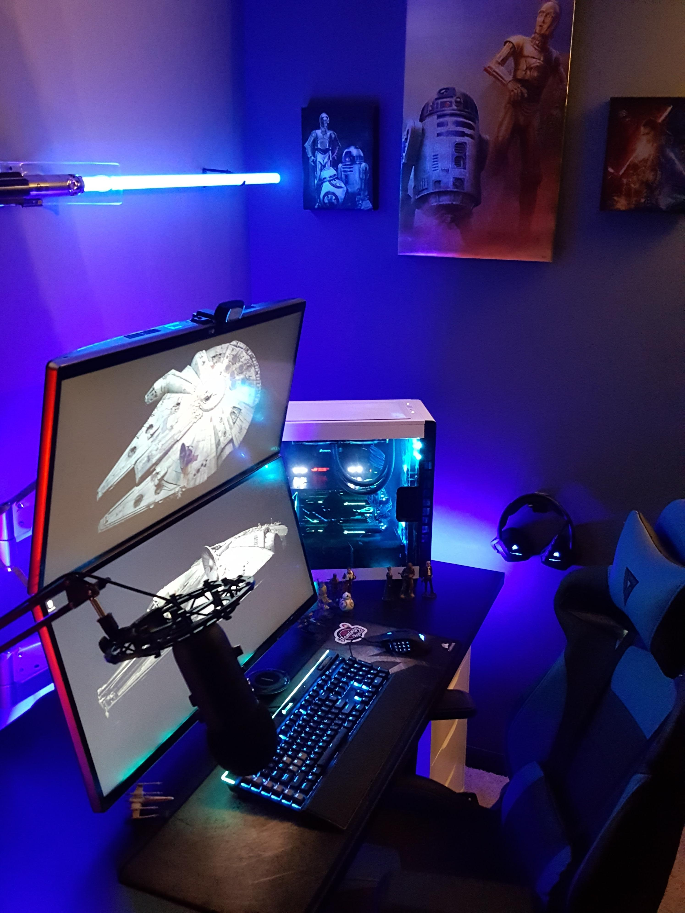

Option 1: Star Wars Theme

This smart lighting adjusts to my mood, so anyone entering the room will know how to talk to me.
Advantages of this design:
- It reminds me of my first love every moment of the day
- I am clearly distancing myself from Star Treck (sp?)
- The mood lighting improves my interactions with other humans
Disadvantages of this design:
- I am reminded of my first love every moment of the day
- There is no possibility to beam up
- The droid background noise is annoying